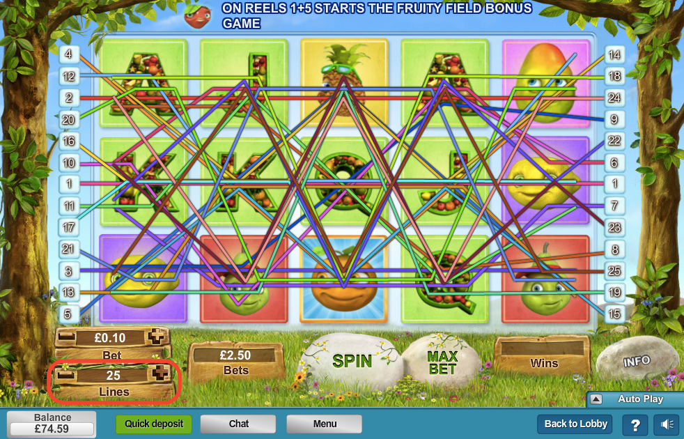

You are probably familiar with the Classic Slot Machine. Three reels spin, and in order to win you need to get three identical symbols lined in the middle. Online Slots, or as they are also called, Video Slots, are more than that. First of all, most have five reels. The second thing to understand is that the winning streak doesn’t need to appear in the middle row. It can be in the top or bottom row, it can be diagonal or in zigzag. Also, the locations of the winning streaks change from one Slot to another. Welcome to the Online World where everything is possible. How would you know you have won if there are so many different Winning options that change from Slot to Slot? Worry not; you will be let known of your every Win by the game’s software.
As mentioned above, in Online Slots there are various possible winning lines. Usually, there are 9 to 30 different winning lines for each Slot game, which are called Pay Lines. They look something like this:
this game above there are 25 different Pay Lines. Meaning, with every spin you have twenty-five possibilities of winning. As you can see, some Pay Lines run straight, some diagonal while others zigzag the reels. The important thing is, if you get any of these 25 Pay Lines, you Win.
You can get a winning streak anywhere along the Pay Line. The matching symbols don’t even need to be next to each other, or in any specific place along the Pay Line.
Let’s explain this. In the game shown above there are 25 Pay Lines. Meaning: with every spin you have 25 different ways to win. Before every spin you need to decide on how many Pay Lines you want to bet; it can be on only 3 lines, or 18. You can select any number from 1 to 25. You can’t choose which lines you want to bet on, just the number.
If you bet on 1 line, you play for 1 coin in every spin. If you bet on 6 lines you play for 6 coins in every spin. The more Pay Lines you bet on, the higher is the amount of money you spend on every spin.
There is no definitive answer here. Some would say that you should always bet on the max number of Pay Lines. That way, you are more likely to win with every spin. That is true, but remember you are betting more money on every spin. Others would say that you should bet on just one single Pay Line per spin, since each line is weighed independently in the win-or-lose equation. That is also true.